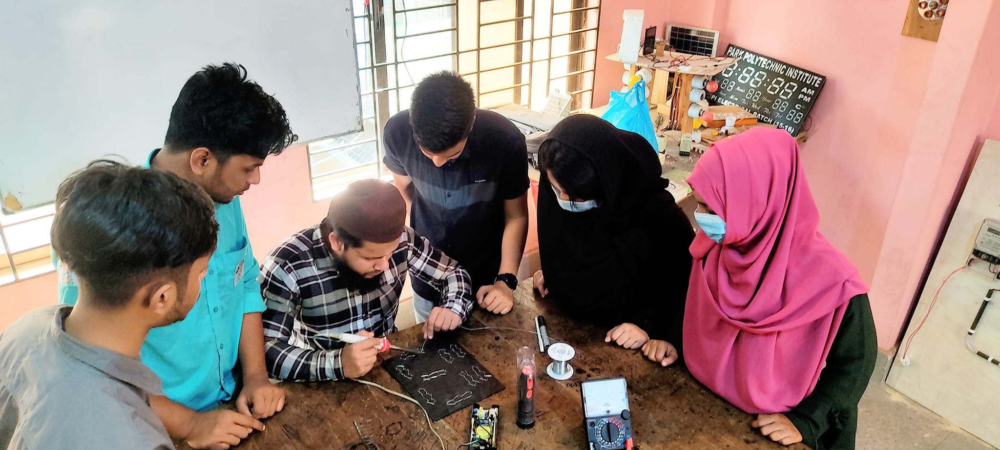
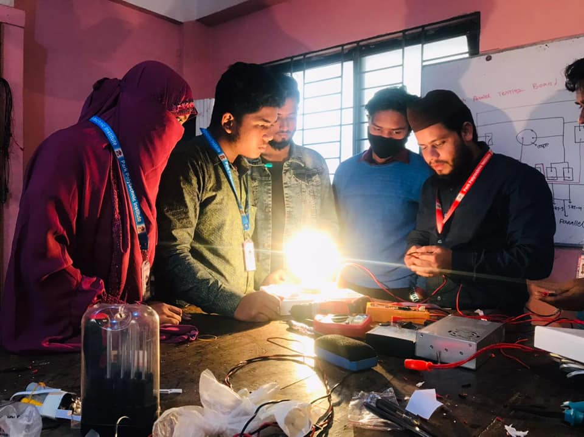

Mechanical Engineering


মেকানিক্যাল ইঞ্জিনিয়ারিং কী ?
মেকানিক্যাল ইঞ্জিনিয়ারিং বা যন্ত্রকৌশল পৃথিবীর অন্যতম বৃহত্তম ও বিস্তৃত ইঞ্জিনিয়ারিং ক্ষেত্র।বর্তমান বিশ্বে মেকানিক্যাল টেকনোলজিকে Mother টেকনোলজি নামে আখ্যায়িত করা হচ্ছে। মেকানিক্যাল ইঞ্জিনিয়ারিং বা যন্ত্রকৌশল পৃথিবীর প্রথম ইঞ্জিনিয়ারিং। ডিপ্লোমা-ইন-মেকানিক্যাল ইঞ্জিনিয়ারিং কোর্সটি বাংলাদেশ কারিগরি শিক্ষা বোর্ডের (বাকাশিবো) অধীনে পরিচালিত ইঞ্জিনিয়ারিং কোর্সগুলোর অন্তর্ভুক্ত। বর্তমান সভ্যতায় সকল আধুনিক যন্ত্রপাতি পরিচালনার জন্য মেকানিক্যাল টেকনোলজির অবদান অপরিসীম এবং এর গুরুত্ব চিরকাল থাকবে।
ইলেকট্রিক্যাল, ইলেকট্রনিক্স, কম্পিউটার, টেক্সটাইল, সিভিল টেকনোলজি এর সিংহভাগ মেকানিক্যাল টেকনোলজির সাথে অতোপ্রতভাবে জড়িত। উন্নত জীবন যাপনের জন্য মানুষের প্রতিটি মুহুর্তেই মেকানিক্যাল টেকনোলজির যন্ত্রপাতির সাথে জড়িত। বাস্তব ক্ষেত্রে আমরা দেখতে পাই মেডিকেল ইনস্ট্রুমেন্ট ইলেকট্রনিক ও কম্পিউটারাইজ যন্ত্রপাতি সব কিছুই মেকানিক্যাল টেকনোলজিতে পড়ে। তাই মেকানিক্যাল টেকনোলজিতে ডিপ্লোমাধারীর জন্য অপেক্ষা করছে নিশ্চিত ভবিষ্যত।